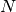

This notebook aims to scale the influence coefficients and run a large Cahn-Hilliard simulation using an MKS model. The notebook will
%matplotlib inline
%load_ext autoreload
%autoreload 2
import numpy as np
import matplotlib.pyplot as plt
from pymks import MKSRegressionModel
from pymks import FiPyCHModel
from sklearn import metrics
mse = metrics.mean_squared_error
np.random.seed(101)
X_train = np.random.random((200, 21, 21))
fipymodel = FiPyCHModel()
y_train = fipymodel.predict(X_train)
The resized_coeff method scales the coefficients. For example
The resize_coeff method pads the coefficients with zeros for an arbitrary dimensional array. This assumes that the coefficients become small away from the origin.
model = MKSRegressionModel()
coeff = np.arange(16).reshape((4, 4, 1))
model.Fcoeff = np.fft.fftn(coeff, axes=(0, 1))
print coeff[:,:,0]
[[ 0 1 2 3]
[ 4 5 6 7]
[ 8 9 10 11]
[12 13 14 15]]
becomes
model.resize_coeff((6, 6))
print np.fft.ifftn(model.Fcoeff, axes=(0, 1))[:, :, 0].astype(int)
[[ 0 1 0 0 2 3]
[ 4 5 0 0 6 7]
[ 0 0 0 0 0 0]
[ 0 0 0 0 0 0]
[ 8 9 0 0 10 11]
[12 13 0 0 14 15]]
-c:2: ComplexWarning: Casting complex values to real discards the imaginary part
Without viewing the resize_coeff method try and take the
[[ 0 1 2 3],
[ 4 5 6 ],
[ 8 9 10 11],
[12 13 14 15]]
array and reproduce the centrally padded (6, 6) array without using loops. Use np.array_split and np.concatenate.
??model.resize_coeff
Ns = [21, 42, 84, 168]
errors = []
np.random.seed(102)
for Nspace in Ns:
print Nspace,
X_test = np.random.random((2, Nspace, Nspace))
fipymodel = FiPyCHModel()
y_test = fipymodel.predict(X_test)
model = MKSRegressionModel(Nbin=5)
model.fit(X_train, y_train)
model.resize_coeff(X_test.shape[1:])
y_pred = model.predict(X_test)
errors.append(mse(y_test, y_pred))
21 42 84 168
plt.semilogx(np.array(Ns)**2, errors)
plt.title(r'Mean Square Error (MSE) v Domain Size ($S$)')
plt.ylabel(r'MSE')
a = plt.xlabel(r'$S$')
The MSE does not vary substantially as  is scaled.
It would be nice if the above with cross-validation and much more data (also using Sklearn) (do this in parallel in the next notebook). Ask how this is done?
Fit the data again.
model = MKSRegressionModel(Nbin=5)
model.fit(X_train, y_train)
Create a random sample to run a simulation.
np.random.seed(11)
X0 = np.random.random((1, 256, 256))
Resize the coefficients to match the sample
model.resize_coeff(X0.shape[1:])
Run a simulation using the MKS!
X1 = X0.copy()
data = []
for step in range(1001):
y = model.predict(X1)
X1 = X1 + fipymodel.dt * y
if step % 100 == 0:
data.append(X1[0])
print step,
0 100 200 300 400 500 600 700 800 900 1000
The above is too slow. It needs to be optimized. About 10000 steps are required for a full simulation.
The MKSRegerssionClass is quite slow. The FFT is not even taking the majority of the time in predict. The next notebook will show how to speed up the MKSRegressionClass using Numexpr and parallel IPython.
%load_ext line_profiler
X1 = X0.copy()
%lprun -f model.predict model.predict(X1)